10 Địa chỉ làm tủ bếp gỗ tự nhiên tại Hà Nội uy tín, chất lượng
Tủ bếp gỗ tự nhiên tại Hà Nội luôn nằm trong danh sách lựa chọn hàng đầu của nhiều gia đình nhờ vẻ đẹp sang trọng, độ bền vượt trội và giá trị thẩm mỹ lâu dài. Không chỉ là nơi phục vụ việc nấu nướng hằng ngày, tủ bếp còn góp phần định hình phong cách nội thất và tạo nên sự ấm cúng cho không gian sống.
Top 10 địa chỉ làm tủ bếp gỗ tự nhiên chất lượng ở Hà Nội
Để sở hữu một bộ tủ bếp gỗ tự nhiên tại Hà Nội vừa đẹp, bền bỉ theo thời gian lại phù hợp với không gian sống, việc lựa chọn đúng đơn vị thiết kế và thi công là yếu tố rất quan trọng. Một địa chỉ uy tín không chỉ đảm bảo nguồn gỗ chất lượng, quy trình sản xuất chuyên nghiệp mà còn giúp tối ưu công năng, mang đến sự tiện nghi cho khu vực bếp.
Nếu bạn đang phân vân giữa nhiều lựa chọn trên thị trường, danh sách dưới đây sẽ là gợi ý hữu ích. Bài viết đã tổng hợp 10 địa chỉ làm tủ bếp gỗ tự nhiên tại Hà Nội uy tín, được nhiều khách hàng tin tưởng, giúp bạn dễ dàng tham khảo và tìm được đơn vị phù hợp với nhu cầu cũng như ngân sách của gia đình.
Vinakit – Thanh Xuân
Nhắc đến các đơn vị làm tủ bếp gỗ tự nhiên chất lượng tại Hà Nội, Vinakit luôn là cái tên được nhiều khách hàng tin tưởng lựa chọn. Tiền thân của Vinakit là Tủ bếp Tuấn Tú, ra đời vào năm 2005 với 3 thành viên. Sau nhiều năm không ngừng nỗ lực để phát triển, đến nay, Vinakit đã có hơn 20 năm kinh nghiệm trong lĩnh vực nội thất và tủ bếp, thực hiện hàng nghìn công trình lớn nhỏ, mang đến cho khách hàng những giải pháp thiết kế bếp vừa thẩm mỹ vừa tối ưu công năng sử dụng.
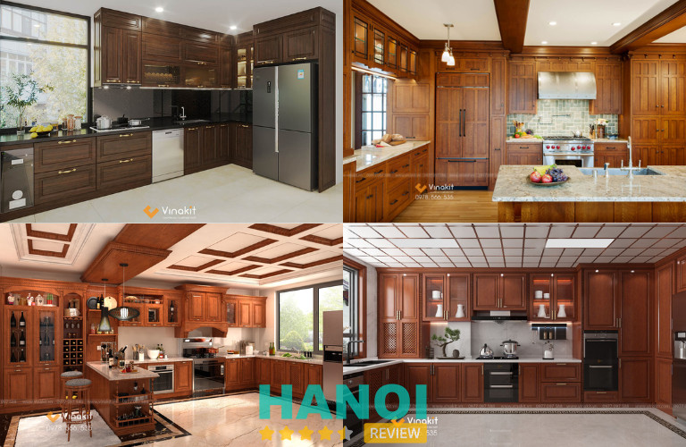
Tủ bếp gỗ tự nhiên Vinakit là sự kết hợp giữa chất liệu gỗ cao cấp và thiết kế hiện đại, tạo nên không gian bếp sang trọng, ấm cúng và bền vững theo thời gian. Không chỉ chú trọng vẻ đẹp tổng thể, các sản phẩm tại Vinakit còn được nghiên cứu kỹ về công năng lưu trữ, giúp căn bếp luôn gọn gàng, tiện nghi và phù hợp với thói quen sinh hoạt của từng gia đình.
Chất liệu gỗ tự nhiên cao cấp, đảm bảo đúng cam kết
Vinakit đặc biệt chú trọng đến chất lượng vật liệu trong quá trình sản xuất tủ bếp. Các mẫu tủ bếp gỗ tự nhiên tại đây được chế tác từ những dòng gỗ cao cấp như:
- Gỗ hương
- Gỗ óc chó
- Gỗ gõ đỏ
Đây đều là những loại gỗ nổi tiếng với độ bền vượt trội, khả năng chịu lực tốt cùng hệ vân gỗ tự nhiên sang trọng. Nhờ đặc tính cứng chắc và ổn định, các loại gỗ này rất phù hợp để sử dụng trong không gian bếp, nơi thường xuyên chịu tác động của nhiệt độ và độ ẩm.
Không chỉ lựa chọn vật liệu chất lượng, Vinakit còn cam kết sử dụng đúng chủng loại gỗ theo hợp đồng, đảm bảo sự minh bạch và quyền lợi cho khách hàng. Trong trường hợp phát hiện gỗ không đúng cam kết hoặc có sự pha tạp, đơn vị sẵn sàng đền bù gấp đôi giá trị hợp đồng, thể hiện sự tự tin về chất lượng sản phẩm cũng như uy tín thương hiệu.
Để khách hàng hoàn toàn yên tâm, Vinakit cũng tạo điều kiện cho khách hàng trực tiếp tham quan xưởng sản xuất, kiểm tra nguồn gỗ và quy trình gia công trước khi tiến hành thi công. Điều này không chỉ giúp khách hàng hiểu rõ hơn về chất lượng vật liệu mà còn thể hiện sự chuyên nghiệp, minh bạch trong toàn bộ quá trình sản xuất tủ bếp.
Quy trình xử lý gỗ và sơn hoàn thiện đạt chuẩn
Một trong những điểm khác biệt của Vinakit so với nhiều đơn vị nội thất trên thị trường chính là quy trình xử lý gỗ nghiêm ngặt. Toàn bộ gỗ tự nhiên trước khi đưa vào sản xuất đều trải qua công đoạn tẩm sấy kỹ lưỡng, giúp hạn chế tối đa tình trạng cong vênh, co ngót hoặc mối mọt trong quá trình sử dụng lâu dài.
Bề mặt tủ bếp được hoàn thiện bằng quy trình sơn PU hoặc sơn bệt chuẩn 5 lớp, giúp lớp sơn bền màu, chống trầy xước và giữ được vẻ đẹp tự nhiên của vân gỗ theo thời gian. Nhờ quy trình hoàn thiện kỹ lưỡng, sản phẩm không chỉ đẹp mắt mà còn có độ bền cao, phù hợp với điều kiện khí hậu tại Việt Nam.
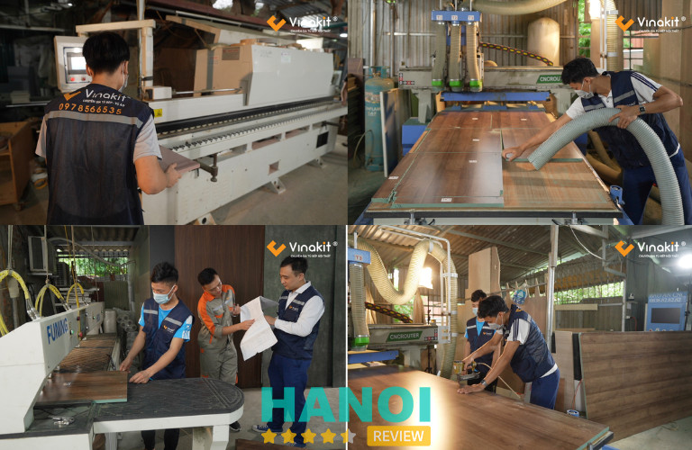
Kết cấu tủ bếp chắc chắn, thiết kế tối ưu công năng
Các mẫu tủ bếp gỗ tự nhiên tại Hà Nội của Vinakit được thiết kế với kết cấu chắc chắn và quy cách gia công tiêu chuẩn cao, nhằm đảm bảo độ bền lâu dài trong môi trường bếp thường xuyên chịu tác động của nhiệt độ và độ ẩm. So với nhiều đơn vị nội thất trên thị trường, Vinakit chú trọng đến từng chi tiết cấu tạo của tủ bếp để mang lại sự ổn định và chắc chắn trong quá trình sử dụng.
Cụ thể, hệ tủ được sản xuất với quy cách vật liệu dày dặn:
- Thùng tủ: dày 17 – 18mm, đảm bảo khả năng chịu lực tốt và hạn chế biến dạng trong quá trình sử dụng.
- Cánh tủ: dày 20 – 21mm, kết cấu chắc chắn, giúp cánh tủ bền bỉ và ổn định khi đóng mở thường xuyên.
- Hậu tủ: sử dụng tấm Alu 3mm chống ẩm, giúp tăng độ bền và bảo vệ hệ tủ khỏi tác động của độ ẩm từ tường bếp.
- Chân tủ: sử dụng chân inox hoặc chân nhựa cao 10mm, có khả năng cách ẩm tốt, chịu lực cao và giúp việc vệ sinh khu vực gầm tủ trở nên dễ dàng hơn.
Bên cạnh kết cấu vững chắc, Vinakit còn đặc biệt chú trọng đến việc tối ưu công năng sử dụng trong từng thiết kế. Hệ phụ kiện tủ bếp được bố trí khoa học và linh hoạt theo nhu cầu của mỗi gia đình, bao gồm các thiết bị tiện ích như giá bát nâng hạ, ngăn kéo đa năng, giá dao thớt, giá gia vị, tay nâng cánh tủ… Nhờ đó, không gian bếp trở nên gọn gàng, thuận tiện cho việc lưu trữ và giúp quá trình nấu nướng diễn ra nhanh chóng, tiện lợi hơn.
Trước khi bàn giao cho khách hàng, toàn bộ hệ tủ bếp đều được đội ngũ kỹ thuật Vinakit kiểm tra kỹ lưỡng về kết cấu, độ khít của cánh tủ, khả năng vận hành của phụ kiện cũng như độ ổn định tổng thể của hệ tủ. Chỉ khi mọi chi tiết đạt tiêu chuẩn về chất lượng và thẩm mỹ, sản phẩm mới được nghiệm thu và bàn giao. Điều này giúp đảm bảo khách hàng luôn nhận được một bộ tủ bếp hoàn thiện, bền chắc và vận hành ổn định ngay từ ngày đầu sử dụng.
Dịch vụ chuyên nghiệp và bảo hành nhanh chóng
Không chỉ chú trọng đến chất lượng sản phẩm, Vinakit còn đặc biệt quan tâm đến trải nghiệm của khách hàng. Đơn vị cung cấp dịch vụ thiết kế – sản xuất – thi công tủ bếp trọn gói, giúp khách hàng tiết kiệm thời gian và đảm bảo sự đồng bộ trong toàn bộ quá trình thực hiện.
Điểm nổi bật của Vinakit là chính sách bảo hành 24 giờ, tức là sau khi tiếp nhận yêu cầu từ khách hàng, đội ngũ kỹ thuật sẽ nhanh chóng có mặt để kiểm tra và xử lý các vấn đề phát sinh trong quá trình sử dụng. Đây là dịch vụ hiếm có trên thị trường nội thất hiện nay và cũng là yếu tố giúp Vinakit tạo dựng được sự tin tưởng từ nhiều khách hàng.
THÔNG TIN LIÊN HỆ:
- Địa chỉ:
- Showroom Hà Nội: Tòa nhà Vinakit, Số 10/1 ngõ 168 Nguyễn Xiển, Thanh Xuân, TP. Hà Nội
- Nhà máy sản xuất: KCN Nam Thăng Long – TP. Hà Nội.
- Điện thoại: 0978 566 535 – 0977 097 588 (Call/Zalo)
- Email: info@vinakit.vn
- Website: vinakit.vn
- Facebook: fb.com/tubepvinakit/
- Youtube: Youtube.com/@VINAKITCHUYENGIATUBEP-NOITHAT
Mộc Minh Đức – Thượng Phúc
Mộc Minh Đức là đơn vị được nhiều khách hàng và đối tác tin tưởng khi tìm kiếm địa chỉ làm tủ bếp gỗ tự nhiên tại Hà Nội. Với hơn 10 năm kinh nghiệm trong lĩnh vực sản xuất nội thất gỗ, đơn vị đã tham gia thực hiện nhiều hạng mục tủ bếp và nội thất cho nhà ở, chung cư, showroom hay các công trình thương mại. Nhờ sự đầu tư bài bản về sản xuất và đội ngũ thợ lành nghề, Mộc Minh Đức mang đến những sản phẩm tủ bếp có độ bền cao, thiết kế thẩm mỹ và phù hợp với nhiều không gian bếp khác nhau.
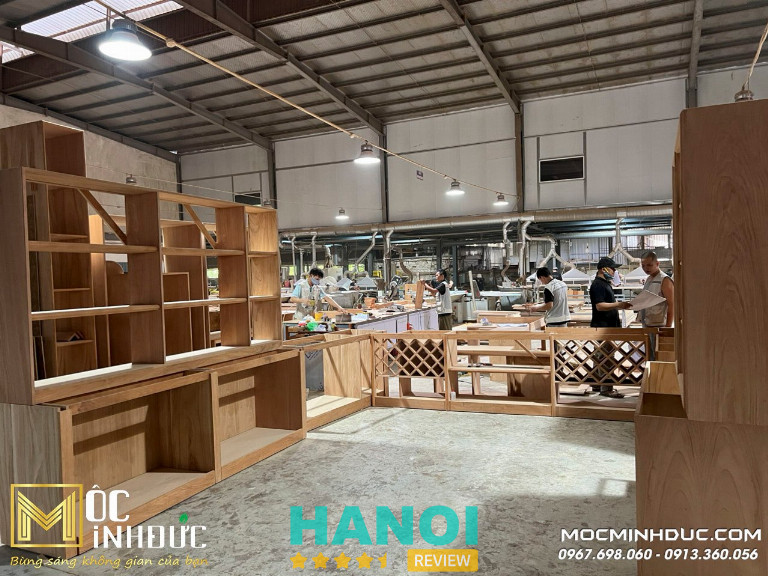
Một trong những lợi thế nổi bật của Mộc Minh Đức là hệ thống nhà xưởng quy mô hơn 1000m², được trang bị nhiều máy móc hiện đại phục vụ cho quá trình gia công và sản xuất nội thất. Nhờ đó, các sản phẩm tủ bếp gỗ tự nhiên được chế tác với độ chính xác cao, đảm bảo sự chắc chắn và tính đồng bộ trong từng chi tiết. Ngoài ra, đơn vị còn nhận sản xuất tủ bếp theo thiết kế riêng hoặc theo yêu cầu của từng công trình, giúp khách hàng dễ dàng sở hữu không gian bếp phù hợp với diện tích và phong cách nội thất của gia đình.
Bên cạnh năng lực sản xuất, Mộc Minh Đức cũng được đánh giá cao nhờ quy trình làm việc rõ ràng và mức giá trực tiếp từ xưởng, giúp tối ưu chi phí cho khách hàng. Từng sản phẩm tủ bếp đều được kiểm tra kỹ lưỡng trước khi xuất xưởng nhằm đảm bảo đúng thiết kế, đúng tiến độ và đạt tiêu chuẩn chất lượng.
Thông tin liên hệ:
- Địa chỉ: Cụm công nghiệp Quất Động – Km 195, Quốc lộ 1A, Thượng Phúc, Hà Nội
- Điện thoại: 0913 360 056 – 0967 698 060
- Email: sale.mocminhduc@gmail.com
- Website: mocminhduc.com
- Facebook: fb.com/mocminhduc
Kiến Trúc Nội Thất HPRO – Thanh Xuân
Kiến Trúc Nội Thất HPRO là một trong những đơn vị có nhiều kinh nghiệm trong lĩnh vực thiết kế và thi công tủ bếp gỗ tự nhiên tại Hà Nội. Với hơn 15 năm hoạt động trong ngành nội thất, HPRO đã thực hiện nhiều dự án nội thất gia đình, chung cư và nhà phố, mang đến những không gian bếp vừa tiện nghi vừa đảm bảo tính thẩm mỹ. Nhờ sở hữu nhà máy sản xuất đồ gỗ công nghiệp và gỗ tự nhiên, cùng hệ thống 3 showroom trưng bày sản phẩm, HPRO có thể đáp ứng đa dạng nhu cầu thiết kế và thi công tủ bếp cho khách hàng.
Điểm mạnh của HPRO là cung cấp nhiều dòng tủ bếp gỗ tự nhiên cao cấp như: tủ bếp gỗ gõ đỏ, gỗ giáng hương, gỗ sồi Nga, gỗ sồi Mỹ, gỗ óc chó… Bên cạnh đó, đơn vị cũng phát triển các dòng tủ bếp gỗ công nghiệp An Cường phù hợp với nhiều phong cách nội thất hiện đại. Mỗi sản phẩm tủ bếp đều được thiết kế dựa trên diện tích không gian và nhu cầu sử dụng thực tế của gia đình, đảm bảo tối ưu công năng lưu trữ và mang lại sự thuận tiện trong quá trình nấu nướng.
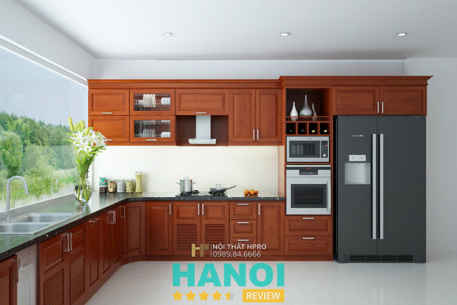
Khi lựa chọn HPRO, khách hàng không chỉ được thi công tủ bếp mà còn được tư vấn giải pháp tổng thể cho không gian bếp từ bố trí công năng, lựa chọn vật liệu đến hệ phụ kiện đi kèm. Tại showroom của HPRO, khách hàng có thể trực tiếp trải nghiệm nhiều vật liệu và phụ kiện nội thất cao cấp đến từ các thương hiệu nổi tiếng như Blum, Hafele, Eurogold, An Cường, Vicostone, Bosch, Cata, Teka…
Nhờ sự kết hợp giữa thiết kế chuyên nghiệp, vật liệu chất lượng và đội ngũ kiến trúc sư giàu kinh nghiệm, HPRO là một trong những địa chỉ đáng tham khảo cho những ai đang tìm kiếm đơn vị làm tủ bếp gỗ tự nhiên tại Hà Nội uy tín và chất lượng.
Thông tin liên hệ:
- Địa chỉ: Tầng 4, Số 18 Nguỵ Như Kon Tum, Thanh Xuân, Hà Nội
- Điện thoại: 0989 846 666 – 0902 222 945
- Email: noithathpro@gmail.com
- Website: noithathpro.com
- Facebook: fb.com/noiithathpro
Nội Thất Hoàng Gia – Hà Đông
Trong số các đơn vị làm tủ bếp gỗ tự nhiên tại Hà Nội, Nội Thất Hoàng Gia được nhiều khách hàng biết đến nhờ phong cách thiết kế tinh tế và định hướng theo các không gian bếp cao cấp. Sau hơn 15 năm hoạt động trong lĩnh vực thiết kế và sản xuất nội thất, đơn vị đã thực hiện nhiều dự án từ nhà phố, căn hộ đến biệt thự sang trọng, mang đến những mẫu tủ bếp vừa đảm bảo công năng sử dụng vừa tạo điểm nhấn nổi bật cho không gian sống.
Thế mạnh của Nội Thất Hoàng Gia nằm ở các thiết kế tủ bếp tân cổ điển và phong cách sang trọng, nơi những chi tiết trang trí được chăm chút kỹ lưỡng để tạo nên tổng thể hài hòa và đẳng cấp. Tủ bếp thường được chế tác từ gỗ tự nhiên hoặc vật liệu cao cấp, kết hợp cùng các đường nét chạm khắc tinh tế, màu sắc ấm áp và hệ tủ bố trí khoa học. Ngoài yếu tố thẩm mỹ, các mẫu tủ bếp còn chú trọng tối ưu hóa không gian lưu trữ với hệ tủ cao kịch trần, nhiều ngăn chức năng và mặt đá bếp bền đẹp, giúp việc nấu nướng trở nên tiện lợi hơn.
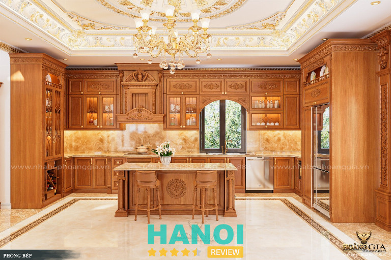
Đội ngũ Hoàng Gia không chỉ tập trung vào thiết kế tủ bếp mà còn cung cấp dịch vụ thiết kế kiến trúc và nội thất trọn gói cho nhiều loại hình công trình như biệt thự, nhà phố, showroom hay nhà hàng. Đơn vị sở hữu showroom trưng bày sản phẩm cùng xưởng sản xuất được đầu tư máy móc hiện đại, cho phép kiểm soát tốt chất lượng trong từng công đoạn.
Thông tin liên hệ:
- Địa chỉ: Biệt Thự số 14 Lô 16A7 Làng Việt Kiều, Châu Âu, Đường Nguyễn Văn Lộc, P. Hà Đông, TP. Hà Nội
- Điện thoại: 0981 225 888 – 0435 335 688
- Email: nhabephoanggia@gmail.com
- Website: nhabephoanggia.vn
- Facebook: fb.com/nhabephoanggia.vn
Nội Thất Đồng Gia – Cầu Giấy
Nội Thất Đồng Gia là một trong những thương hiệu nội thất cao cấp được nhiều khách hàng biết đến, đặc biệt trong lĩnh vực thiết kế và thi công tủ bếp gỗ tự nhiên tại Hà Nội dành cho các không gian sống sang trọng. Đơn vị gây ấn tượng với định hướng phát triển các sản phẩm nội thất từ gỗ óc chó tự nhiên, một loại gỗ cao cấp được ưa chuộng trong các công trình biệt thự và căn hộ cao cấp. Qua nhiều năm hoạt động, Đồng Gia đã tạo dựng phong cách thiết kế riêng, mang đến những không gian bếp vừa tiện nghi vừa thể hiện rõ nét cá tính của gia chủ.
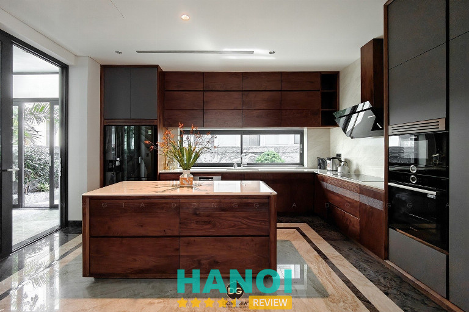
Các mẫu tủ bếp của Đồng Gia thường được thiết kế theo phong cách hiện đại hoặc bán cổ điển, chú trọng vào sự hài hòa giữa công năng và tính thẩm mỹ. Chất liệu gỗ óc chó với màu nâu trầm sang trọng cùng hệ vân gỗ tự nhiên độc đáo giúp không gian bếp trở nên ấm cúng và đẳng cấp hơn. Không chỉ tập trung vào vẻ đẹp bên ngoài, hệ tủ còn được bố trí khoa học nhằm tối ưu diện tích lưu trữ, mang lại sự tiện lợi trong quá trình sử dụng hằng ngày.
Ngoài việc thi công tủ bếp, Nội Thất Đồng Gia còn cung cấp dịch vụ thiết kế kiến trúc và nội thất tổng thể, đặc biệt cho các dự án biệt thự và căn hộ cao cấp. Showroom của Đồng Gia được thiết kế như một không gian trưng bày nghệ thuật, nơi khách hàng có thể trực tiếp trải nghiệm các mẫu nội thất và cảm nhận rõ phong cách thiết kế đặc trưng của thương hiệu.
Thông tin liên hệ:
- Địa chỉ: 59 Nguyễn Quốc Trị, Trung Hòa, Cầu Giấy, TP. Hà Nội
- Điện thoại: 0967 116 666
- Email: noithatdonggia8888@gmail.com
- Website: donggia.vn
- Facebook: fb.com/NoiThatDongGia
Nội Thất Hà Anh – Dương Nội
Nội Thất Hà Anh được nhiều khách hàng quan tâm khi tìm kiếm tủ bếp gỗ tự nhiên tại Hà Nội, đặc biệt với các thiết kế mang phong cách tân cổ điển sang trọng. Sau hơn 10 năm hoạt động trong lĩnh vực nội thất, đơn vị đã thực hiện nhiều công trình nhà ở và biệt thự, mang đến những không gian bếp vừa tiện nghi vừa thể hiện rõ dấu ấn thẩm mỹ của gia chủ. Hà Anh chú trọng vào việc kết hợp giữa chất liệu gỗ cao cấp và thiết kế tinh tế nhằm tạo nên những sản phẩm bền đẹp theo thời gian.
Nội Thất Hà Anh nổi bật với các sản phẩm nội thất gỗ óc chó và tủ bếp tân cổ điển, màu sắc trầm ấm, hệ vân gỗ tự nhiên sang trọng cùng những chi tiết trang trí mềm mại. Phong cách tân cổ điển tại đây được thể hiện thông qua sự kết hợp hài hòa giữa nét đẹp cổ điển và sự tối giản của thiết kế hiện đại, mang lại không gian bếp thanh lịch và đẳng cấp. Nhờ vậy, các mẫu tủ bếp không chỉ đảm bảo công năng sử dụng mà còn góp phần nâng tầm thẩm mỹ cho tổng thể ngôi nhà.
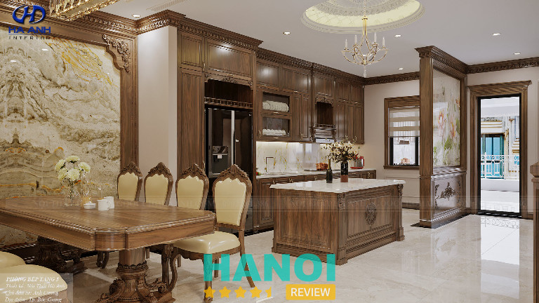
Bên cạnh đó, Nội Thất Hà Anh sở hữu xưởng sản xuất quy mô hơn 2.000m² cùng showroom trưng bày gần 1.000m², giúp khách hàng có thể trực tiếp tham quan và trải nghiệm sản phẩm trước khi lựa chọn. Đội ngũ kiến trúc sư, nghệ nhân và thợ thi công giàu kinh nghiệm luôn chú trọng từng chi tiết trong quá trình thiết kế và sản xuất. Với mô hình thiết kế – sản xuất – thi công trọn gói, Nội Thất Hà Anh là một trong những lựa chọn đáng tham khảo cho những gia đình đang tìm kiếm đơn vị làm tủ bếp gỗ tự nhiên tại Hà Nội theo phong cách sang trọng và tinh tế.
Thông tin liên hệ:
- Địa chỉ: Tầng 3, Tòa An Phú, Đường Lê Trọng Tấn, P. Dương Nội, (Q. Hà Đông cũ), TP. Hà Nội
- Điện thoại: 024 33 581 656 – 0902 261 386
- Email: info@noithathaanh.vn
- Website: goocchohaanh.com
- Facebook: fb.com/noithathaanh.vn/
Nội Thất Nguyễn Kim – Cầu Giấy
Nội Thất Nguyễn Kim hoạt động trong lĩnh vực thiết kế và thi công nội thất gia đình, đặc biệt chú trọng đến các sản phẩm tủ bếp. Với kinh nghiệm thực hiện nhiều công trình nhà phố, chung cư và biệt thự, Nguyễn Kim mang đến những giải pháp tủ bếp vừa đảm bảo thẩm mỹ vừa đáp ứng tốt nhu cầu sử dụng hằng ngày.
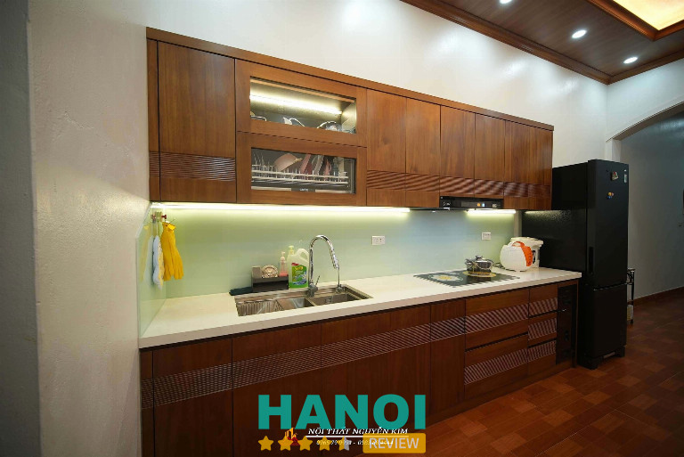
Các mẫu tủ bếp tại Nội Thất Nguyễn Kim được thiết kế đa dạng về phong cách, từ hiện đại, tối giản cho đến những mẫu mang nét sang trọng truyền thống. Đơn vị sử dụng nhiều loại gỗ tự nhiên phổ biến trong sản xuất tủ bếp như gỗ sồi, gỗ xoan đào hay các dòng gỗ cao cấp khác, giúp sản phẩm có độ bền cao và giữ được vẻ đẹp tự nhiên của vân gỗ. Bên cạnh đó, hệ tủ được bố trí khoa học với nhiều ngăn lưu trữ tiện lợi, góp phần tối ưu diện tích và tạo sự gọn gàng cho không gian bếp.
Không chỉ chú trọng thiết kế, Nội Thất Nguyễn Kim còn đầu tư vào quy trình sản xuất và thi công chuyên nghiệp, nhằm đảm bảo mỗi sản phẩm khi hoàn thiện đều đạt tiêu chuẩn về chất lượng và độ bền. Đội ngũ kỹ thuật và thợ thi công lành nghề luôn kiểm soát kỹ lưỡng từng công đoạn, từ gia công vật liệu đến lắp đặt tại công trình.
Thông tin liên hệ:
- Địa chỉ: Số 12 ngõ 210 Hoàng Quốc Việt, Cầu Giấy, TP. Hà Nội
- Điện thoại: 0983 684 444
- Email: noithatnguyenkim68@gmail.com
- Website: noithatnguyenkim.vn
- Facebook: fb.com/Nguyenkimnoithat
Nội thất Thuận Phát – Thanh Xuân
Nếu đang tìm kiếm tủ bếp gỗ tự nhiên tại Hà Nội với độ bền cao và thiết kế hiện đại, bạn có thể liên hệ Nội Thất Thuận Phát. Đơn vị nổi bật với các dòng tủ bếp kết hợp giữa khung inox và cánh gỗ tự nhiên, mang lại giải pháp vừa chắc chắn vừa đảm bảo tính thẩm mỹ cho không gian bếp. Nhờ sự kết hợp giữa vật liệu bền bỉ và thiết kế tối ưu, các mẫu tủ bếp tại Thuận Phát phù hợp với nhiều kiểu không gian từ căn hộ chung cư đến nhà phố hay biệt thự.
Một trong những sản phẩm được nhiều khách hàng lựa chọn tại Thuận Phát là tủ bếp inox cánh gỗ Sồi Mỹ. Hệ thùng tủ được làm từ inox 304 chống gỉ, có khả năng chịu lực và chịu nhiệt tốt, trong khi phần cánh tủ sử dụng gỗ Sồi Mỹ với vân gỗ tự nhiên sang trọng, mang lại cảm giác ấm cúng cho căn bếp. Bên cạnh đó, các mẫu tủ bếp còn được thiết kế kịch trần để tăng diện tích lưu trữ, kết hợp cùng các phụ kiện tiện ích như giá bát nâng hạ, thiết bị âm tủ và bố trí khu vực nấu – rửa – lưu trữ khoa học, giúp việc nấu nướng trở nên thuận tiện hơn.
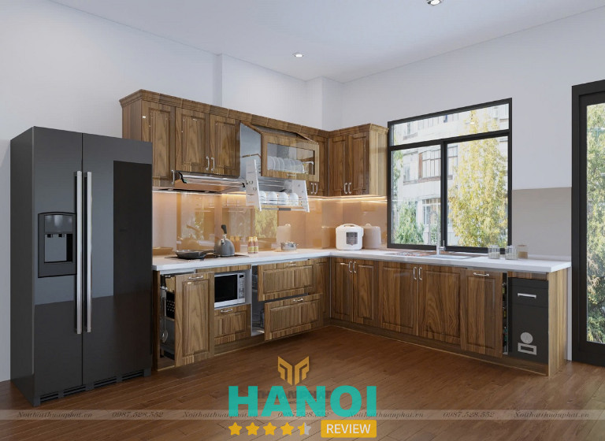
Ngoài ra, Nội Thất Thuận Phát còn cung cấp các dòng tủ bếp gỗ Sồi Nga, gỗ Óc chó và nhiều vật liệu gỗ tự nhiên khác, được xử lý tẩm sấy kỹ càng nhằm hạn chế mối mọt và ẩm mốc trong quá trình sử dụng. Sản phẩm được sản xuất trực tiếp tại xưởng nên có mức giá cạnh tranh, đồng thời đi kèm chính sách bảo hành lên đến 5 năm và bảo trì trọn đời.
Thông tin liên hệ:
- Địa chỉ: 199 phố Giáp Nhất, Thanh Xuân, TP. Hà Nội
- Điện thoại: 0867 475 128
- Email: noithatthuanphat88@gmail.com
- Website: noithatthuanphat.vn
- Facebook: fb.com/ntthuanphat88
Quang Huy Kitchen – Thanh Trì
Có thể liên hệ Quang Huy Kitchen nếu bạn đang tìm một đơn vị chuyên thiết kế và thi công tủ bếp gỗ tự nhiên tại Hà Nội. Quang Huy được nhiều gia đình lựa chọn nhờ các sản phẩm có độ bền cao và mức chi phí hợp lý. Đơn vị tập trung vào các giải pháp tủ bếp trọn gói, từ khâu tư vấn thiết kế đến sản xuất và lắp đặt hoàn thiện, giúp khách hàng dễ dàng sở hữu không gian bếp phù hợp với diện tích và phong cách nội thất của gia đình.
Thế mạnh của Quang Huy Kitchen nằm ở các dòng tủ bếp gỗ xoan đào và gỗ sồi Nga – những loại gỗ tự nhiên được sử dụng phổ biến trong sản xuất tủ bếp. Gỗ xoan đào nổi bật với màu sắc nâu đỏ ấm áp, vân gỗ rõ nét và khả năng chịu lực tốt, mang lại cảm giác gần gũi và sang trọng cho không gian bếp. Trong khi đó, tủ bếp gỗ sồi Nga lại được nhiều khách hàng ưa chuộng nhờ vân gỗ sáng, thiết kế hiện đại và mức giá phù hợp với nhiều gia đình.
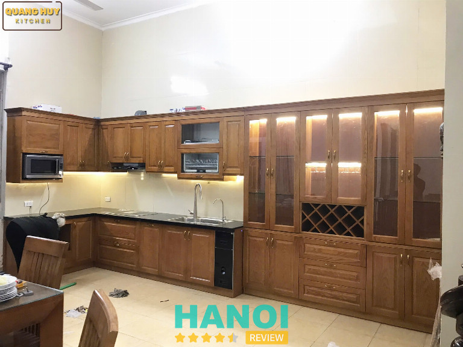
Bên cạnh việc chú trọng chất liệu, Quang Huy Kitchen còn đầu tư vào quy trình thiết kế và thi công nhằm đảm bảo tính tiện nghi khi sử dụng. Hệ tủ bếp được bố trí khoa học với các khu vực nấu, rửa và lưu trữ rõ ràng, kết hợp cùng nhiều phụ kiện tiện ích giúp tối ưu không gian bếp. V
Thông tin liên hệ:
- Địa chỉ: Km2, Đường Phan Trọng Tuệ, Thanh Trì, TP. Hà Nội
- Điện thoại: 0868 436 763
- Email: quanghuykitchen@gmail.com
- Website: quanghuykitchen.com
- Facebook: fb.com/quanghuykitchen
Nội thất HAGO – Nam Từ Liêm
Công ty CP Kiến Trúc & Nội Thất HAGO là một trong những đơn vị hoạt động trong lĩnh vực thiết kế và thi công nội thất, được nhiều khách hàng quan tâm khi tìm kiếm tủ bếp gỗ tự nhiên tại Hà Nội. Với định hướng phát triển các sản phẩm nội thất từ gỗ tự nhiên bền đẹp và thân thiện với không gian sống, HAGO tập trung vào việc mang đến những giải pháp tủ bếp vừa đảm bảo thẩm mỹ vừa đáp ứng tốt nhu cầu sử dụng của các gia đình.
Các sản phẩm tủ bếp tại HAGO được chế tác từ nhiều dòng gỗ tự nhiên phổ biến và được ưa chuộng như gỗ óc chó, gỗ tần bì, gỗ sồi, gỗ gõ đỏ hay gỗ hương đá. Những loại gỗ này không chỉ nổi bật với vân gỗ tự nhiên đẹp mắt mà còn có độ bền cao, kết cấu chắc chắn và khả năng chịu lực tốt. Trước khi đưa vào sản xuất, vật liệu gỗ đều được xử lý qua nhiều công đoạn như sấy khô, chống mối mọt và hoàn thiện bề mặt bằng sơn PU, giúp hạn chế cong vênh và tăng độ bền cho sản phẩm trong quá trình sử dụng.
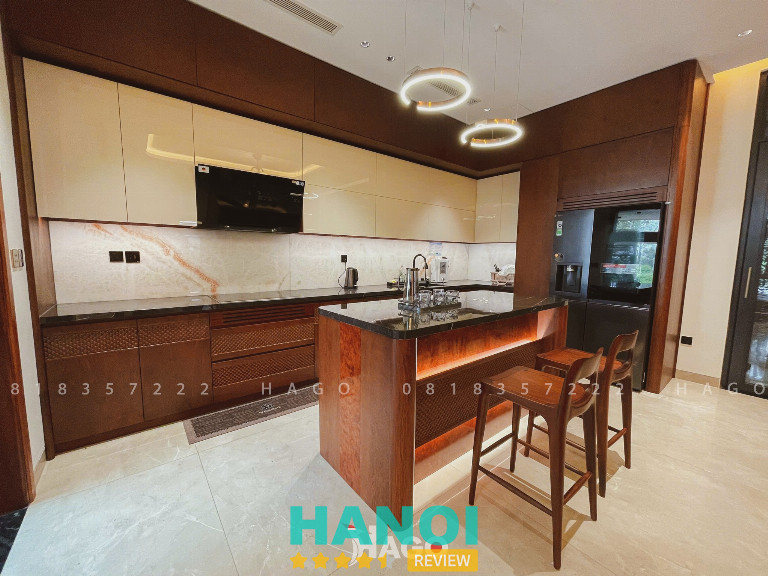
Trong lĩnh vực thi công tủ bếp tự nhiên, HAGO còn chú trọng thiết kế và sự tiện nghi trong từng bộ tủ bếp. Các mẫu tủ được thiết kế linh hoạt theo nhiều phong cách khác nhau, từ hiện đại đến cổ điển, giúp phù hợp với nhiều kiểu không gian bếp. Nhờ sự kết hợp giữa chất liệu gỗ tự nhiên, quy trình sản xuất cẩn thận và thiết kế tối ưu công năng, HAGO mang đến những bộ tủ bếp vừa sang trọng, vừa tạo cảm giác ấm cúng cho không gian sinh hoạt của gia đình.
Thông tin liên hệ:
- Địa chỉ: Số 58.BT6 đường Foresa 3, KĐT Xuân Phương, Nam Từ Liêm, TP. Hà Nội
- Điện thoại: 081 835 7222
- Email: noithathago@gmail.com
- Website: noithathago.com
- Facebook: fb.com/noithatgotunhiencaocaphago
Tiêu chí lựa chọn đơn vị tủ bếp gỗ tự nhiên tại Hà Nội
Để sở hữu một bộ tủ bếp gỗ tự nhiên tại Hà Nội vừa bền đẹp vừa phù hợp với nhu cầu sử dụng, việc lựa chọn đơn vị thiết kế và thi công uy tín là yếu tố rất quan trọng. Dưới đây là một số tiêu chí giúp bạn đánh giá và lựa chọn được đơn vị phù hợp.
1. Kinh nghiệm và uy tín của đơn vị thi công
Những đơn vị có nhiều năm hoạt động trong lĩnh vực nội thất thường sở hữu đội ngũ kiến trúc sư, kỹ thuật viên và thợ thi công lành nghề. Kinh nghiệm thực tế qua nhiều công trình giúp họ hiểu rõ đặc điểm của từng loại gỗ tự nhiên cũng như cách xử lý để đảm bảo độ bền và tính thẩm mỹ cho tủ bếp. Ngoài ra, các dự án đã thực hiện cũng là cơ sở để khách hàng đánh giá mức độ uy tín của đơn vị.
2. Chất lượng vật liệu gỗ sử dụng
Chất liệu gỗ quyết định lớn đến tuổi thọ của tủ bếp. Khi lựa chọn đơn vị thi công, bạn nên tìm hiểu rõ loại gỗ được sử dụng, quy trình tẩm sấy và xử lý chống mối mọt. Các loại gỗ tự nhiên phổ biến như gỗ sồi, gỗ xoan đào, gỗ óc chó hay gỗ gõ đỏ thường được đánh giá cao nhờ độ bền tốt và vân gỗ đẹp, mang lại giá trị thẩm mỹ lâu dài cho không gian bếp.
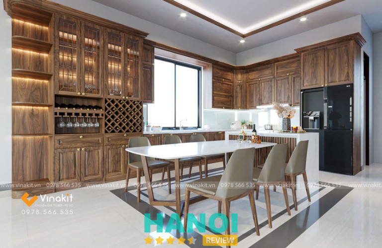
3. Khả năng thiết kế và tối ưu công năng
Một đơn vị chuyên nghiệp không chỉ thi công mà còn cần có khả năng tư vấn thiết kế không gian bếp khoa học. Việc bố trí hợp lý các khu vực nấu, rửa và lưu trữ sẽ giúp quá trình nấu nướng thuận tiện hơn. Đồng thời, hệ tủ và phụ kiện cũng cần được lựa chọn phù hợp với diện tích và thói quen sử dụng của từng gia đình.
4. Báo giá minh bạch và quy trình làm việc rõ ràng
Một đơn vị uy tín thường cung cấp bảng báo giá chi tiết cho từng hạng mục như vật liệu, phụ kiện, chi phí sản xuất và lắp đặt. Điều này giúp khách hàng dễ dàng kiểm soát ngân sách và tránh các chi phí phát sinh không cần thiết trong quá trình thi công.
5. Chính sách bảo hành và dịch vụ hậu mãi
Bảo hành và hỗ trợ sau khi lắp đặt là yếu tố quan trọng khi lựa chọn đơn vị làm tủ bếp. Những đơn vị chuyên nghiệp thường có chính sách bảo hành rõ ràng, sẵn sàng hỗ trợ sửa chữa hoặc bảo trì khi cần thiết, giúp khách hàng yên tâm hơn trong quá trình sử dụng lâu dài.
Hy vọng danh sách trên đã giúp bạn có thêm thông tin hữu ích khi tìm kiếm địa chỉ làm tủ bếp gỗ tự nhiên tại Hà Nội uy tín, chất lượng. Mỗi đơn vị đều có những thế mạnh riêng về thiết kế, vật liệu và dịch vụ thi công, vì vậy bạn nên cân nhắc nhu cầu sử dụng, phong cách mong muốn cũng như ngân sách để lựa chọn đơn vị phù hợp nhất. Một bộ tủ bếp gỗ tự nhiên được thiết kế và thi công đúng chuẩn không chỉ mang lại sự tiện nghi trong sinh hoạt mà còn góp phần tạo nên không gian bếp ấm cúng, bền đẹp theo thời gian.
DOANH NGHIỆP: Đăng tải thông tin MIỄN PHÍ.
Tin đọc nhiều


10 Địa chỉ thiết kế, thi công tủ rượu tại Hà Nội đẹp và sang...
Thiết kế, thi công tủ rượu tại Hà Nội không chỉ đơn thuần là việc tạo ra một không gian lưu trữ rượu, mà còn...

11 Cửa hàng Decor tại Hà Nội đẹp, nhiều phong cách, giá rẻ
Với nguồn hàng lớn, đa dạng và chất lượng, các cửa hàng Decor tại Hà Nội sẽ là điểm đến lý tưởng dành cho những...

Trở thành người đầu tiên bình luận cho bài viết này!